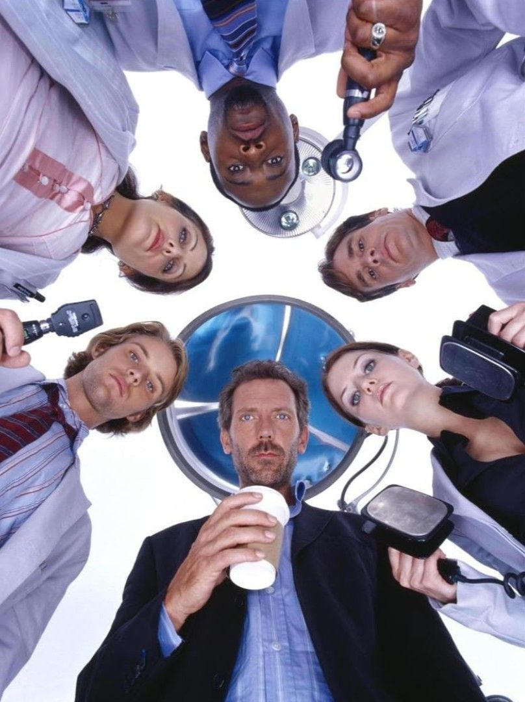
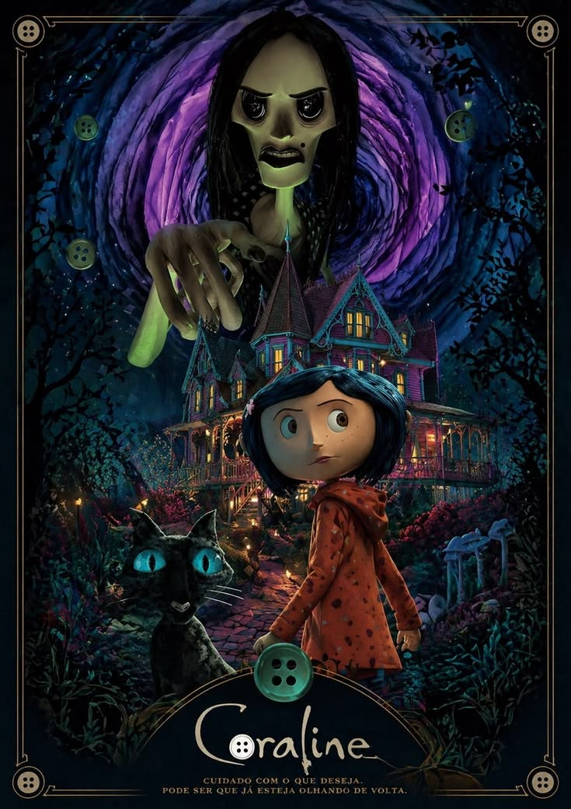
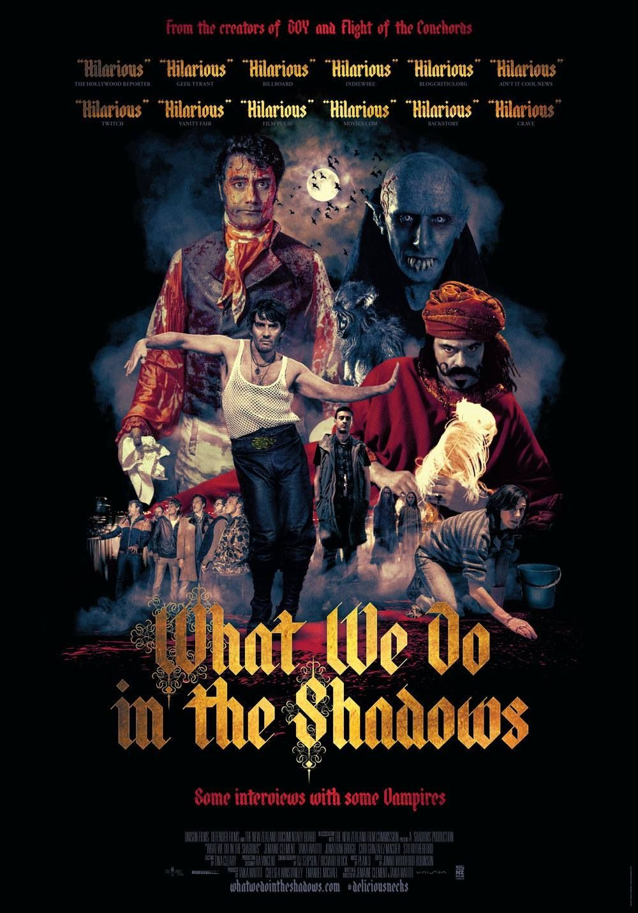

Hello World!
Привіт, мене звати Аріна.
Сьогодні я розкажу вам про мої улюблені фільми, серіали та мультфільми.
Почнемо з того, що мої улюблені жанри це жахи, містика, детектив та
бойовик. Але загалом, я обожнюю кіно, тому не маю обмежень по жанрам.
Відкривають наш парад ФІЛЬМИ
- Усі фільми Марвел
- Чим ми займаємся у тінях
- Дедпул 2
- Бетмен (2022)
- Родина Адамсів
- Шерлок Холмс
- Ван Хельсінг
- Констянтин
- Закляття
- Люди в чорному
- Творіння Крістофера Нолана
Далі топ-10 серіалів
- Надприродне
- Доктор Хаус
- Шерлок
- Декстер
- Менталіст
- Люцифер
- Шерлок
- Відчайдушні домогосподарки
- Шибайголова
- Серіали Марвел
Та на останок шедеври мультиплікації
- Кораліна в країні кошмарів
- Лего Ніндзяго
- Таємниці Гравіті Фолз
- Скубі-Ду
- Панда Кунг-Фу
- Нікчемний Я
- Університет Чупарського
Постери до кожної категорії

Доктор Хаус - один із найкращих медичних серіалів.

Кораліна в країні кошмарів саме те що треба для осіннього вечора.

Класика фільмів про вампірів (не Сутінки).
На щастя у світі існує дуже багато дійсно гідних фільмів, серіалів та
мультфільмів тож список улюблених кіношедеврів не має кінця.
Дякую за увагу!